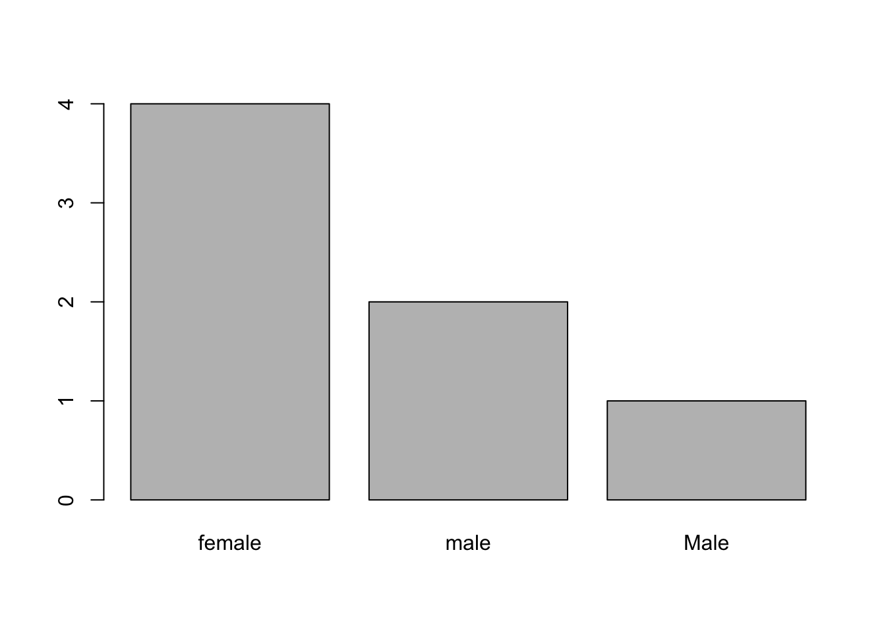
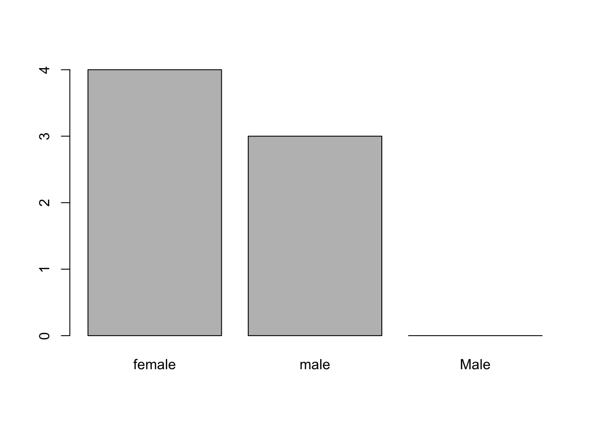
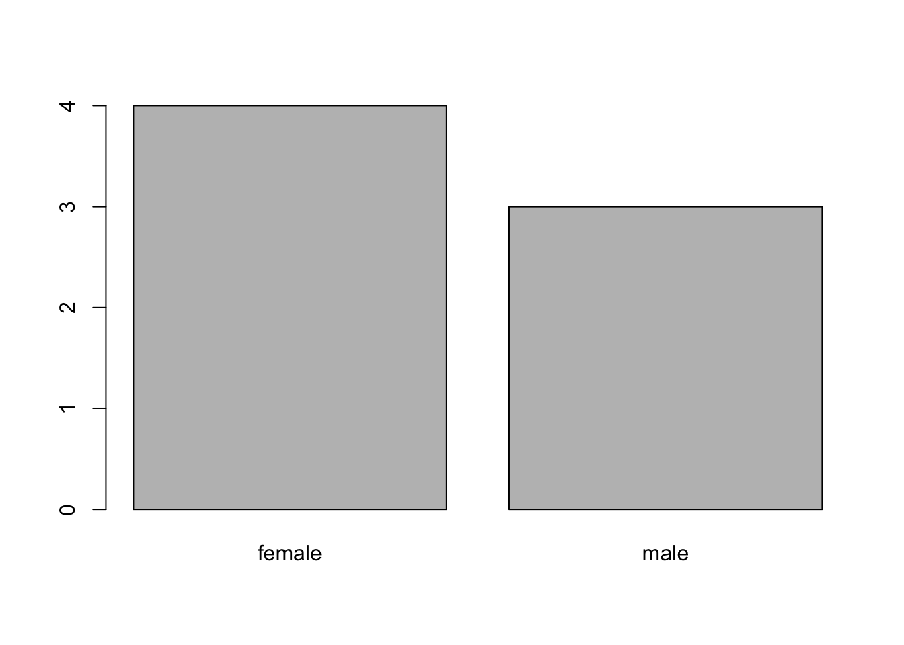
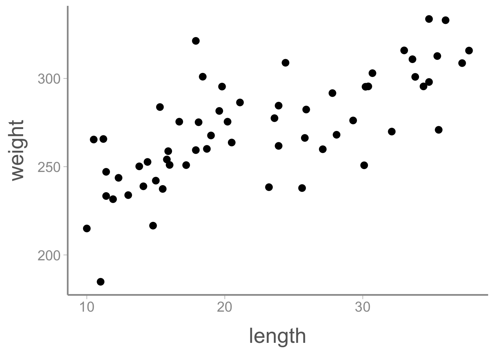
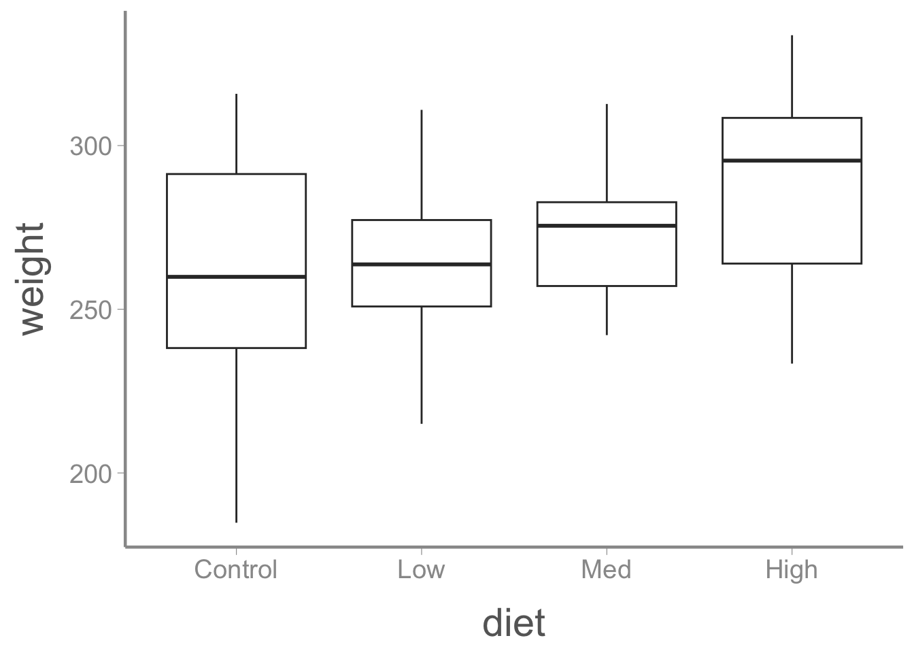
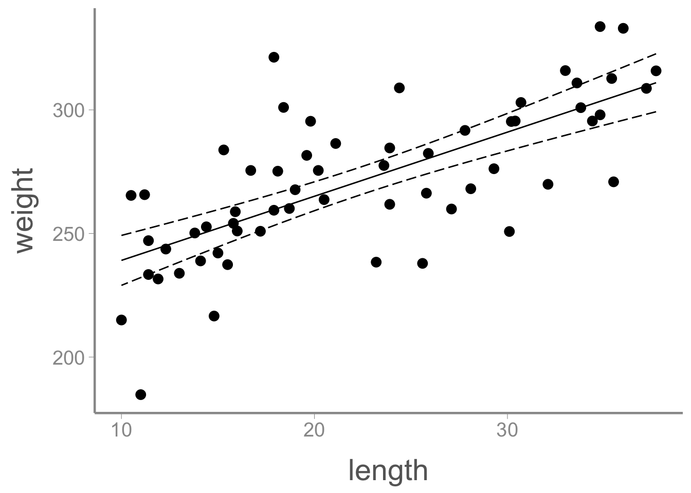
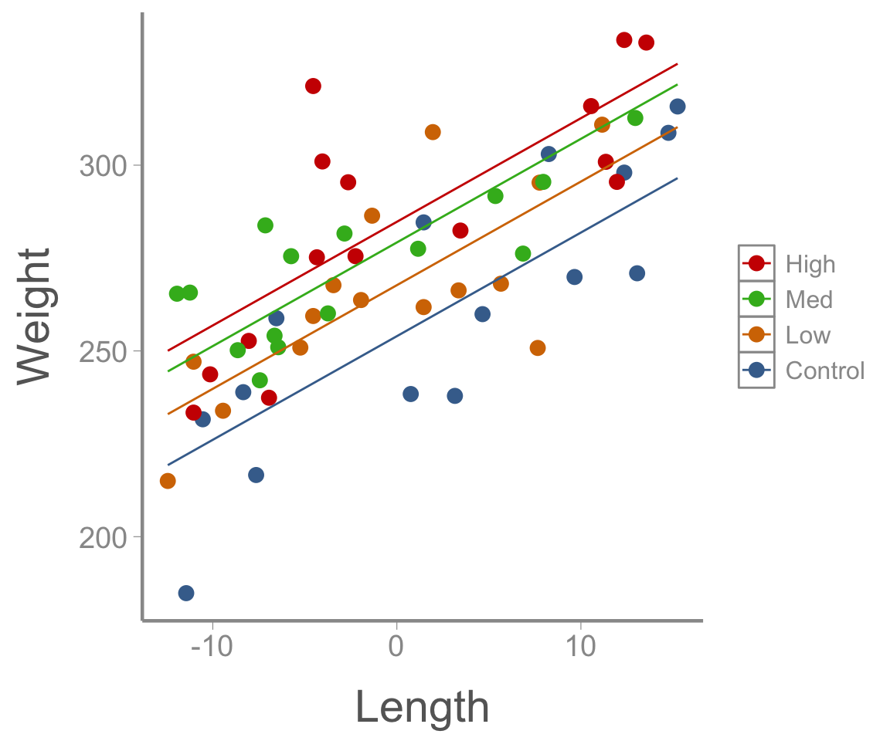

library(FANR6750)
data("dietdata")
str(dietdata)
#> 'data.frame': 60 obs. of 5 variables:
#> $ weight: num 185 217 232 238 238 ...
#> $ diet : Factor w/ 4 levels "Control","Low",..: 1 1 1 1 1 1 1 1 1 1 ...
#> $ length: num 11 14.8 11.9 25.6 23.2 14.1 15.9 27.1 32.1 35.5 ...
#> $ sex : chr "F" "F" "M" "F" ...
#> $ gravid: chr "Y" NA NA "N" ...Lab 6: Multiple Regression
FANR 6750: Experimental Methods in Forestry and Natural Resources Research
Fall 2026
Lab 5
ANOVA
Performing an ANOVA with lm() and aov()
Performing an ANOVA by hand
Plotting confidence intervals
Multiple comparisons
Today’s topics
- Multiple Regression
ANCOVA
Blocking
- Centering predictors
Scenarios
We would like to perform an ANOVA but there is an additional continuous predictor that is likely contributing to some of the variation in the response.
We would like to perform an ANOVA but there is another grouping variable other than our treatment that is likely contributing to some of the variation in the response.
We would like to perform linear regression but we have more than one continuous predictor (HW assignment).
Scenario 1: ANCOVA
Remember from lecture that an ANCOVA (Analysis of Covariance) is used when we are interested in performing an ANOVA while first accounting for a continuous variable. This variable may or may not be of particular interest to us, but we would be wise to at least take it into account. While ANCOVA is sometimes thought of as a hybrid between ANOVA and regression, remember that all of these are just different forms of a linear model. We could write the ANCOVA as a linear model:
\[ \Large y_{ij} = \mu + \alpha_i + \beta(x_{ij} − \bar{x}) + \epsilon_{ij} \]
How would you interpret each parameter in the context of the data?
What would be the hypotheses related to this model?
Data example
Below is a dataset which contains information about Blue Tilapia (Oreochromis aureus), a species of fish which are sometimes used in aquaponics systems. In this case, a researcher is interested in understanding how various diet regimens affect tilapia weight (g) after a period of 3 months. While performing this study, he would like to take into account the length (cm) of each fish at the start of the study. Given that longer fish tend to weigh more, he suspects that ignoring this variable would not be appropriate.
Load the data and check the structure:
An aside about factors
Factors look like character strings but they behave quite differently, and understanding the way that R handles factors is key to working with this type of data. The key difference between factors and character strings is that factors are used to represent categorical data with a fixed number of possible values, called levels1.
Factors can be created using the factor() function:
age <- factor(c("adult", "juvenile", "adult", "juvenile"))Because we didn’t explicitly tell R the levels of this factor, it will assume the levels are adult and juvenile. Furthermore, by default R assigns levels in alphabetical order, so adult will be the first level and juvenile will be the second level:
levels(age)
#> [1] "adult" "juvenile"Sometimes alphabetical order might not make sense:
treatment <- factor(c("medium", "low", "high"))What order will R assign to the treatment levels?
If you want to order the factor in a different way, you can use the optional levels argument:
treatment <- factor(c("low", "medium", "high"), levels = c("low", "medium", "high"))
levels(treatment)
#> [1] "low" "medium" "high"Sometimes you may also need to remove factor levels. For example, let’s see what happens if we have a typo in one of the factors:
sex = factor(c("male", "female", "female", "Male", "male", "female", "female"))
barplot(table(sex))
Oops, one of the field techs accidentally capitalized “Male”. Let’s change that to lowercase:
sex[sex == "Male"] <- "male"
barplot(table(sex))
Hmm, there’s still a bar for Male. We can see what’s happening here by looking at the levels:
levels(sex)
#> [1] "female" "male" "Male"Removing/editing the factors doesn’t change the levels! So R still thinks there are three levels, just zero Male entries. To remove that mis-specified level, we need to drop it:
sex <- droplevels(sex)
barplot(table(sex))
Back to the data
We need to change diet to a factor, and while doing so we’ll explicitly define the level order:
dietdata$diet <- factor(dietdata$diet, levels = c("Control", "Low", "Med", "High"))
levels(dietdata$diet)
#> [1] "Control" "Low" "Med" "High"Let’s also visualize the data:
library(ggplot2)
ggplot(dietdata, aes(x = length, y = weight)) +
geom_point()
ggplot(dietdata, aes(x = diet, y = weight)) +
geom_boxplot()
And finally, let’s quantify the relationship between length and weight using a linear regression:
fm1 <- lm(weight ~ length, dietdata)
summary(fm1)
#>
#> Call:
#> lm(formula = weight ~ length, data = dietdata)
#>
#> Residuals:
#> Min 1Q Median 3Q Max
#> -56.91 -12.58 0.63 10.28 61.69
#>
#> Coefficients:
#> Estimate Std. Error t value Pr(>|t|)
#> (Intercept) 213.174 8.069 26.4 <2e-16 ***
#> length 2.594 0.337 7.7 2e-10 ***
#> ---
#> Signif. codes: 0 '***' 0.001 '**' 0.01 '*' 0.05 '.' 0.1 ' ' 1
#>
#> Residual standard error: 21.7 on 58 degrees of freedom
#> Multiple R-squared: 0.505, Adjusted R-squared: 0.497
#> F-statistic: 59.2 on 1 and 58 DF, p-value: 1.99e-10library(knitr)
kable(broom::tidy(fm1), col.names = c("Term", "Estimate", "SE", "Statistic", "p-value"))| Term | Estimate | SE | Statistic | p-value |
|---|---|---|---|---|
| (Intercept) | 213.174 | 8.0688 | 26.420 | 0 |
| length | 2.594 | 0.3371 | 7.695 | 0 |
We can also add regression lines and CIs to our plot using the predict() function:
Create a new data frame containing a sequence of values of the predictor variable length
Predict weight using these values of length
Put predictions and data together for plotting
size <- dietdata$length
nd <- data.frame(length = seq(min(size), max(size), length = 50))
E1 <- predict(fm1, newdata = nd, se.fit = TRUE, interval="confidence")
predictionData <- data.frame(E1$fit, nd)
ggplot() +
geom_point(data = dietdata, aes(x = length, y = weight)) +
geom_ribbon(data = predictionData, aes(x = length, ymin = lwr, ymax = upr),
color = "black", linetype = "longdash", fill = NA) +
geom_path(data = predictionData, aes(x = length, y = fit)) 
Note that in this simple case, you could use the built in stat_smooth() in ggplot2 to plot the regression line, though that will not always work. predict() is a more general method for creating and plotting regression lines from fitted models.
It’s clear that there is a strong, positive relationship between length and weight. If we want to quantify whether there is an effect of diet on weight, we will clearly need to control for length in our analysis.
As an aside, let’s see what happens if we had ignored length and simply performed a one-way ANOVA.
summary(aov(weight~ diet, data= dietdata))
#> Df Sum Sq Mean Sq F value Pr(>F)
#> diet 3 5459 1820 2.05 0.12
#> Residuals 56 49734 888Notice that we conclude that there is not a difference in weights as a function of diet type even though later in the lab, we will see that diet is an important factor. Why do we reach this incorrect conclusion here?
Now we are ready to perform the ANCOVA. To make interpretation simpler, we will center the continuous predictor.
dietdata$length_centered <- dietdata$length - mean(dietdata$length)
fm2 <- lm(weight~ length_centered + diet, data= dietdata)
summary(fm2)
#>
#> Call:
#> lm(formula = weight ~ length_centered + diet, data = dietdata)
#>
#> Residuals:
#> Min 1Q Median 3Q Max
#> -38.25 -12.18 -2.53 12.15 49.23
#>
#> Coefficients:
#> Estimate Std. Error t value Pr(>|t|)
#> (Intercept) 253.967 4.875 52.10 < 2e-16 ***
#> length_centered 2.789 0.297 9.38 5.2e-13 ***
#> dietLow 13.727 6.878 2.00 0.05091 .
#> dietMed 25.226 6.974 3.62 0.00065 ***
#> dietHigh 30.784 6.833 4.51 3.5e-05 ***
#> ---
#> Signif. codes: 0 '***' 0.001 '**' 0.01 '*' 0.05 '.' 0.1 ' ' 1
#>
#> Residual standard error: 18.6 on 55 degrees of freedom
#> Multiple R-squared: 0.654, Adjusted R-squared: 0.628
#> F-statistic: 25.9 on 4 and 55 DF, p-value: 4.14e-12How would you interpret each of these parameter estimates in the context of the data?
As before, we can create predictions of weight over a sequences of lengths, for every level of diet:
lengthC <- dietdata$length_centered
nd2 <- data.frame(diet=rep(c("Control", "Low", "Med", "High"), each = 15),
length_centered=rep(seq(min(lengthC), max(lengthC),length = 15), times = 4))
E2 <- predict(fm2, newdata=nd2, se.fit = TRUE, interval = "confidence")
predData2 <- data.frame(E2$fit, nd2)
ggplot() +
geom_point(data = dietdata, aes(x = length_centered, y = weight, color = diet)) +
geom_line(data = predData2, aes(x = length_centered, y = fit, color = diet)) +
guides(colour= guide_legend(reverse= T)) +
scale_y_continuous("Weight") +
scale_x_continuous("Length")
We can also look at multiple comparisons. Note that because we used the lm() function instead of aov(), we are not able to use TukeyHSD() as we did before. Instead we can use glht() function from the multcomp package.
library(multcomp)
summary(glht(fm2, linfct=mcp(diet="Tukey")))
#>
#> Simultaneous Tests for General Linear Hypotheses
#>
#> Multiple Comparisons of Means: Tukey Contrasts
#>
#>
#> Fit: lm(formula = weight ~ length_centered + diet, data = dietdata)
#>
#> Linear Hypotheses:
#> Estimate Std. Error t value Pr(>|t|)
#> Low - Control == 0 13.73 6.88 2.00 0.2019
#> Med - Control == 0 25.23 6.97 3.62 0.0035 **
#> High - Control == 0 30.78 6.83 4.51 <0.001 ***
#> Med - Low == 0 11.50 6.83 1.68 0.3419
#> High - Low == 0 17.06 6.82 2.50 0.0705 .
#> High - Med == 0 5.56 6.87 0.81 0.8500
#> ---
#> Signif. codes: 0 '***' 0.001 '**' 0.01 '*' 0.05 '.' 0.1 ' ' 1
#> (Adjusted p values reported -- single-step method)
Scenario 2: Blocking
Blocking is used when an additional factor besides our treatment of interest may be contributing to variation in the response variable. While blocking is usually thought of in the context of an ANOVA, it can be used in other linear modeling situations as well.
Blocks can be regions, time periods, individual subjects, etc. but blocking must occur during the design phase of the study. (Later in the course, we will discuss the scenario where we are interested in this second factor and we will no longer refer to it as a block.)
We can write the additive Randomized Complete Block Design as:
\[\large y_{ij} = \mu + \alpha_i + \beta_j + \epsilon_{ij}\]
What would be the hypotheses related to this model?
Blocked ANOVA by hand
To “fit” the RCBD model by hand, we’ll use the gypsy moth data we saw in lecture. In this dataset a researcher has counted the number of caterpillars in each plot treated with either Bt or Dimilin (or left as a control). Additionally, because the treated plots were located in 4 geographic regions, region has been included as a block in the model.
library(FANR6750)
data("mothdata")
head(mothdata)| Region | Treatment | Larvae |
|---|---|---|
| 1 | Control | 25 |
| 1 | Bt | 16 |
| 1 | Dimilin | 14 |
| 2 | Control | 10 |
| 2 | Bt | 3 |
| 2 | Dimilin | 2 |
Before we analyze the moth data, we need to tell R to treat the Treatment and Region variables as factors:
str(mothdata)
#> tibble [12 × 3] (S3: tbl_df/tbl/data.frame)
#> $ Region : Factor w/ 4 levels "1","2","3","4": 1 1 1 2 2 2 3 3 3 4 ...
#> $ Treatment: Factor w/ 3 levels "Control","Bt",..: 1 2 3 1 2 3 1 2 3 1 ...
#> $ Larvae : num [1:12] 25 16 14 10 3 2 15 10 16 32 ...Right now, they are character and integer objects, respectively.
mothdata$Treatment <- factor(mothdata$Treatment, levels = c("Control", "Bt", "Dimilin"))
levels(mothdata$Treatment)
#> [1] "Control" "Bt" "Dimilin"
mothdata$Region <- factor(mothdata$Region)
levels(mothdata$Region)
#> [1] "1" "2" "3" "4"Note that we were explicit about the order of levels for Treatment so that control came first.
Means
Next, compute the means:
library(dplyr)
# Grand mean
(grand.mean <- mean(mothdata$Larvae))
#> [1] 14.42
# Treatment means
(treatment.means <- group_by(mothdata, Treatment) %>% summarise(mu = mean(Larvae)))
#> # A tibble: 3 × 2
#> Treatment mu
#> <fct> <dbl>
#> 1 Control 20.5
#> 2 Bt 11.8
#> 3 Dimilin 11
# Block means
(block.means <- group_by(mothdata, Region) %>% summarise(mu = mean(Larvae)))
#> # A tibble: 4 × 2
#> Region mu
#> <fct> <dbl>
#> 1 1 18.3
#> 2 2 5
#> 3 3 13.7
#> 4 4 20.7Treatment sums of squares
The formula for the treatment sums of squares:
\[\Large b \times \sum_{i=1}^a (\bar{y}_i - \bar{y}_.)^2\]
b <- nlevels(mothdata$Region)
(SS.treat <- b * sum((treatment.means$mu - grand.mean)^2))
#> [1] 223.2Block sums of squares
The formula for the block sums of squares:
\[\Large a \times \sum_{j=1}^b (\bar{y}_j - \bar{y}_.)^2\]
a <- nlevels(mothdata$Treatment)
(SS.block <- a * sum((block.means$mu - grand.mean)^2))
#> [1] 430.9Within groups sums of squares
\[\Large \sum_{i=1}^a \sum_{j=1}^b (y_{ij} - \bar{y}_i - \bar{y}_j + \bar{y}_.)^2\]
treatment.means.long <- rep(treatment.means$mu, times = b)
block.means.long <- rep(block.means$mu, each = a)
(SS.within <- sum((mothdata$Larvae - treatment.means.long - block.means.long + grand.mean)^2))
#> [1] 114.8NOTE: For the above code to work, treatment.means and block.means must be in the same order as in the original data.
Create ANOVA table
Now we’re ready to create the ANOVA table. Start with what we’ve calculated so far:
df.treat <- a - 1
df.block <- b - 1
df.within <- df.treat*df.block
ANOVAtable <- data.frame(df = c(df.treat, df.block, df.within),
SS = c(SS.treat, SS.block, SS.within))
rownames(ANOVAtable) <- c("Treatment", "Block", "Within")
ANOVAtable
#> df SS
#> Treatment 2 223.2
#> Block 3 430.9
#> Within 6 114.8Next, add the mean squares:
MSE <- ANOVAtable$SS / ANOVAtable$df
ANOVAtable$MSE <- MSE ## makes a new column!Now, the F-values (with NA for error/within/residual row):
F.stat <- c(MSE[1]/MSE[3], MSE[2]/MSE[3], NA)
ANOVAtable$F.stat <- F.statFinally, the p-values
p <- c(1 - pf(F.stat[1], 2, 6), 1 - pf(F.stat[2], 3, 6), NA)
ANOVAtable$p <- pQuick reminder about calculating p-values
qf(0.95, 2, 6) # 95% of the distribution is below this value of F
#> [1] 5.143
1-pf(F.stat[1], 2, 6) # Proportion of the distribution beyond this F value
#> [1] 0.03922Be sure you understand what each of these functions is doing!
And we’ll display the table using kable(), with a few options to make it look a little nicer:
options(knitr.kable.NA = "") # leave NA cells empty
knitr::kable(ANOVAtable, digits = 2, align = "c",
col.names = c("df", "SS", "MSE", "F", "p-value"),
caption = "RCBD ANOVA table calculated by hand")| df | SS | MSE | F | p-value | |
|---|---|---|---|---|---|
| Treatment | 2 | 223.2 | 111.58 | 5.83 | 0.04 |
| Block | 3 | 430.9 | 143.64 | 7.51 | 0.02 |
| Within | 6 | 114.8 | 19.14 |
Blocked ANOVA using aov()
aov1 <- aov(Larvae ~ Treatment + Region, mothdata)
summary(aov1)
#> Df Sum Sq Mean Sq F value Pr(>F)
#> Treatment 2 223 111.6 5.83 0.039 *
#> Region 3 431 143.6 7.51 0.019 *
#> Residuals 6 115 19.1
#> ---
#> Signif. codes: 0 '***' 0.001 '**' 0.01 '*' 0.05 '.' 0.1 ' ' 1Look what happens if we ignore the blocking variable though:
aov2 <- aov(Larvae ~ Treatment, mothdata)
summary(aov2)
#> Df Sum Sq Mean Sq F value Pr(>F)
#> Treatment 2 223 111.6 1.84 0.21
#> Residuals 9 546 60.6Blocked ANOVA using lm()
lm1 <- lm(Larvae~ Treatment + Region, mothdata)
summary(lm1)
#>
#> Call:
#> lm(formula = Larvae ~ Treatment + Region, data = mothdata)
#>
#> Residuals:
#> Min 1Q Median 3Q Max
#> -5.250 -1.021 0.167 0.604 5.750
#>
#> Coefficients:
#> Estimate Std. Error t value Pr(>|t|)
#> (Intercept) 24.42 3.09 7.89 0.00022 ***
#> TreatmentBt -8.75 3.09 -2.83 0.03001 *
#> TreatmentDimilin -9.50 3.09 -3.07 0.02191 *
#> Region2 -13.33 3.57 -3.73 0.00971 **
#> Region3 -4.67 3.57 -1.31 0.23924
#> Region4 2.33 3.57 0.65 0.53782
#> ---
#> Signif. codes: 0 '***' 0.001 '**' 0.01 '*' 0.05 '.' 0.1 ' ' 1
#>
#> Residual standard error: 4.37 on 6 degrees of freedom
#> Multiple R-squared: 0.851, Adjusted R-squared: 0.726
#> F-statistic: 6.84 on 5 and 6 DF, p-value: 0.0183Can you interpret each parameter estimate from the output of aov1 and lm1? What different information is provided from these two ways of constructing the model? Which null hypotheses were rejected? Failed to be rejected?
Assignment
Some time ago, plantations of Pinus caribaea were established at four locations on Puerto Rico. As part of a study, four spacing intervals were used at each location to determine the effect of spacing on tree height. Twenty years after the plantations were established, measurements (height in ft) were made in the study plots. Additionally, soil chemistry was analyzed to determine average pH and nitrogen content (mg N/kg soil) for each tree. Note that although spacing interval is a number, it must be treated as a factor since these 4 spacing intervals (and only these 4) are of interest to the researcher.
You can access these data using:
library(FANR6750)
data("pinedata")Questions/tasks
The researcher would like you to develop several models to investigate the variables affecting tree height in the plantations. When you have done this, she asks that you submit a report of your findings. Instructions for the report are shown below.
Construct a model using the lm() function which predicts tree height as a function of spacing and, because the researcher is also interested in seeing if soil pH is contributing to differences in tree height, include pH as a predictor as well. You may choose to center the continuous variable or not, but remember that it will affect the way you interpret the results.
Write out the hypotheses associated with this model
Use the equation editor to show the linear model you would use and interpret each term.
State your model conclusions in the context of the data. Does there appear to be a relationship between tree height and tree spacing.
Determine which tree spacings differ from eachother with regard to their effect on tree height.
Create a publication quality plot displaying the effect that pH and tree spacing has on tree height. The figure should have a descriptive caption and any aesthetics (color, line type, etc.) should be clearly defined.
Construct an ANOVA table by hand which shows the relationship between tree height and spacing as well as the other categorical variable of location. The researcher is not particularly interested in geographic location and she’s not sure of the exact mechanism, but she thinks it may affect the results.
Create a well formatted ANOVA table with a table header using available R functions.
Was it necessary to include location in your model? Would it have changed your overall conclusions about the effect of spacing on tree height if you had not included it?
Construct a model using the lm() function that predicts tree height as a function of soil pH and nitrogen content.
Write out the hypotheses associated with this model
Use the equation editor to show the linear model you would use and interpret each term.
Interpret each parameter estimate in the model output
Discussion: Up to now, we have discussed how we might construct several types of models which are all being used to predict tree height in this data scenario. Later in the semester we will talk about ‘model selection’ which is the process of choosing one model out of several that somehow best represents the research system. Having no formal instruction on this topic yet (or perhaps you do) explain how you think model selection might be done. What kinds of metrics might you use to decide which model best represents the data? (There is no one right answer here and all reasonably thought out answers will be accepted.)
You may format the report however you like but it should be well-organized, with relevant headers, plain text, and the elements described above.
- At the end of your document, create a new header called “Reflection”. Under this header, answer the following questions:
On a 1-10 scale, how would you rate your confidence in the topics covered in this lab?
What lingering questions/confusion about these topics do you still have?
If you used AI to assist with this assignment, do you think it helped? Did it save time? If you did not use AI, do you think it would have helped?
A few things to remember when creating the document:
Be sure to include your name in the
authorfield of the headerBe sure the output type is set to:
output: html_documentBe sure to set
echo = TRUEin allRchunks so that all code and output is visible in the knitted documentRegularly knit the document as you work to check for errors
See the R Markdown reference sheet for help with creating
Rchunks, equations, tables, etc.If you use AI on any part of your assignment, you must include the full prompt(s) you used and it’s full answer(s) in a separate section titled “AI assistance” at the end of this document.
Footnotes
Under the hood,
Ractually treats factors as integers - 1, 2, 3… - with character labels for each level↩︎